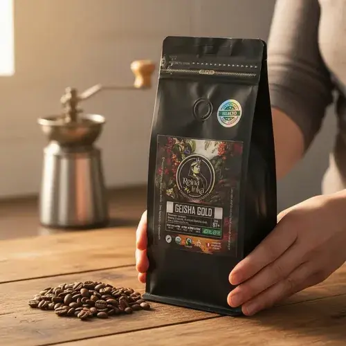

1.Geisha San Fernando - Cusco
Cultivado a 1,850 msnm en el valle de La Convención. Es una de las variedades más codiciadas del mundo por su complejidad aromática.
- Proceso: Lavado con fermentación controlada de 24 horas
- Notas de cata: Jazmín, flor de azahar, miel de abeja y durazno
- Puntuación SCA: 88.5 puntos
- Precio sugerido: S/52.00